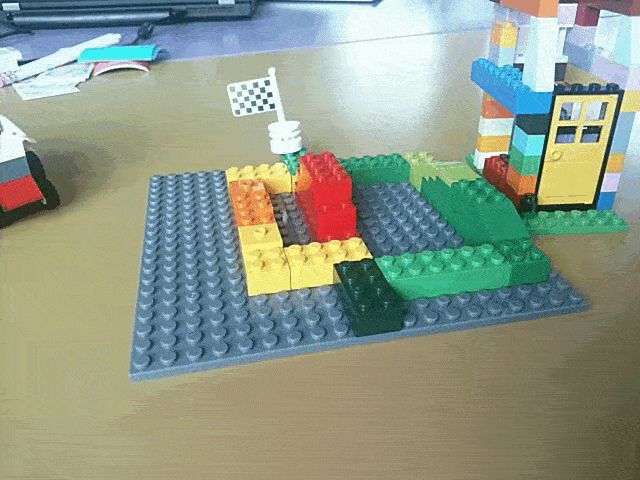

Navigation für Rollstuhlfahrer

- Wir schreiben eine Navigationsanwendung, die Hindernisse visualisiert.
- Du entscheidest welche Alternativroute für dich die beste ist.
- Die Anwendung lernt aus deinen Entscheidungen um bei künftigen Routenvorschlägen auf deine Bedürfnisse einzugehen.
Berücksichtigung vorhandener Daten

Unsere Anwendung schlägt ÖPNV-Verbindungen vor, achtet dabei auf Barrierefreien Ein-/Ausstieg und welche Fahrstühle derzeit funktionieren.
Aktueller Stand
Von September 2019 bis Februar 2020 werden wir im Rahmen des Prototype Funds gefördert.
Wir haben gerade erst mit dem Projekt begonnen. Alle Entwicklungen findest du auf Github.
Triff uns
- 21.-23. September 2019 State of the Map
- 16.-17. November 2019 Accessibility Club Summit 2019 Berlin
- 26.-30. Dezember 2019 35C3
- Anfang März 2020 Prototypefund Demo Day
- Mitte März 2020 Chemnitzer Linux-Tage
Du erreichst uns auf Github oder per Mail.